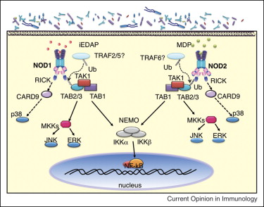
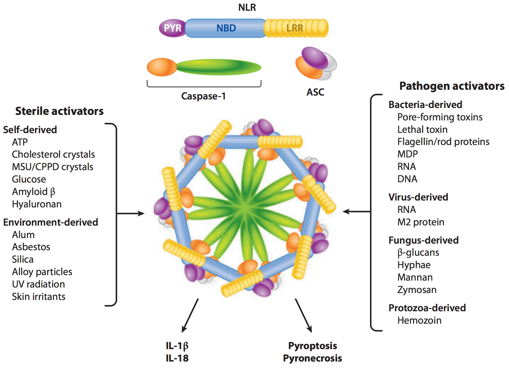
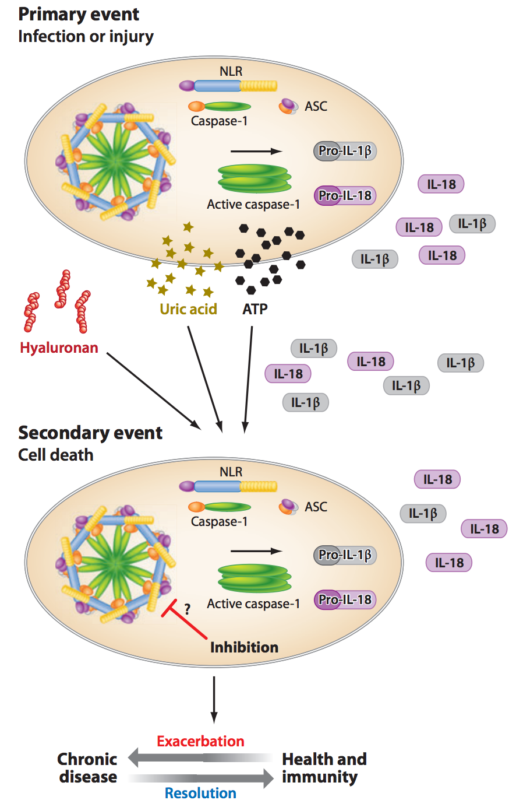

Nod-Like Receptors
Christopher Wetherill
TBMH 5054
Functions
- Intracellular sensors of PAMPs
- Scaffolding proteins that control activation of inflammatory capsases
- Mediate activation of NF-κB and MAPK
- Mutations in these proteins have been linked to various inflammatory diseases
doi: 10.1111/j.1600-065X.2008.00734.x
NLR Family Members
- At least 23 NLR family members in humans
- 34 NLR genes in mice
- Expressed immune cells, epithelial cells
- However, some are expressed primarily in phagocytes (macrophages, neutrophils)
doi: 10.1111/j.1600-065X.2008.00734.x
Major Characteristics
- Composed of 3 separate domains:
- a central NACHT domain;
- a c-terminal leucine-rich repeat; and
- a variable N-terminal domain
doi: 10.1146/annurev-immunol-031210-101405
Cellular Localization
- Found to be associated with plasma membrane
- Linked to downstream signaling
- Deficient NF-κB activation if unable to become membrane-associated
- Recently-identified NLR (NLRX1) localized to the mitochondria
doi: 10.1016/j.coi.2008.06.001
Signaling

doi: 10.1016/j.coi.2008.06.001
NLRP3 Inflammasome Activation

doi: 10.1146/annurev-immunol-031210-101405
Inflammasome Activation
- Activation of inflammasomes is poorly understood
- Multiple pathways likely exist; may include:
- Activation by ROS generated by PAMPs;
- Initiation by K+ efflux through pores in plasma membrane from pore-forming toxins; or
- Activation in response to lysosomal damage (cathepsin B leakage)
doi: 10.1146/annurev-immunol-031210-101405
NLRP3 Inflammasome Activation

doi: 10.1146/annurev-immunol-031210-101405
References
- Davis, B., Wen, H., & Ting, J. (2011). The inflammasome NLRs in immunity, inflammation, and associated diseases. Annu. Rev. Immunol., 29, 707 – 735.
- Franchi, L., Warner, N., Viani, K., & Nuñez, G. (2009). Function of Nod-like receptors in microbial recognition and host defense. Immunological Reviews, 227, 106 – 128.
- Shaw, M., Reimer, T., Kim, Y., & & Nuñez, G. (2008). NOD-like receptors (NLRs): Bona fide intracellular microbial sensors. Current Opinion in Immunology, 20, 377 – 382.